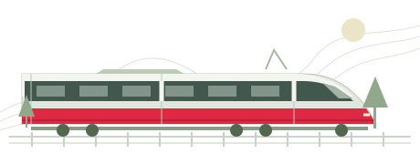

GOOD MORNING, PENINSULA.
Your commute.
A little clearer.
The next train. The weather on the other end.
A little less guesswork before you go.

DEMO CLOCK · MON, NOV 16, 20268:10 AM PSTFixed sample day, not the current time
Choose a demo route
32 source-brief listings · 2 legacy listings excluded from service
YOUR NEXT MOVE
Next departures
San Francisco → Palo Alto
SIMULATED TIMETABLERecomputed at 8:10 AM demo time
BEFORE YOU BOARD
Demo service notices
FAMILIAR TRACKS
Your regular routes
Saved only in this browser. No sign-in, tracking or cloud sync.
Less guesswork.
More go.
This is a working interface, not a travel service. Explore routes, sample schedules and weather—then use official sources to plan an actual journey.